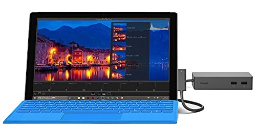
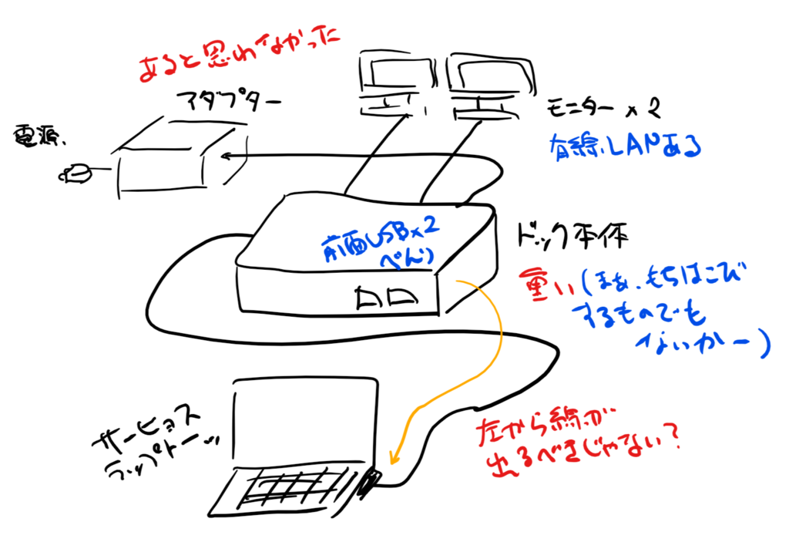
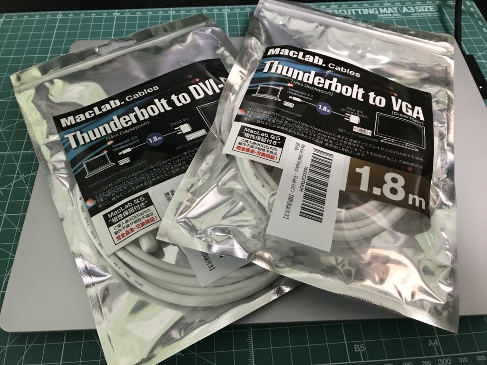

Surface Laptop＋ドックで3画面生活はじめました
公開日：

ある野望を抱いたので、Surface Laptop ついでに Surface ドックも買ってみました。充電＋周辺機器の接続を行うためのアダプターで、Amazon なら 20,000 円程度で買えます*1。

- 出版社/メーカー: マイクロソフト
- メディア: エレクトロニクス
- この商品を含むブログ (1件) を見る
Surface のコネクターは共通のようで*2、Surface Pro 3 以降や Surface Book、僕が試した Surface Laptop でも使えるそうです。こういう配慮はちょっとうれしいかも。これだったらちょっと高くてもドック買って大丈夫かなぁ、って思えます。
開封式の写真は撮り損ねた＆撮るほどでもないと思ったので省略。代わりに Surface Laptop ＋ペンで感想をまとめてみました（絵が描けない人なのが辛いけど……）。

まずビックリしたのが、重さ。公称の重量は 550g ですが、結構ズッシリきます。想像以上だったので、ちょっと度肝を抜かれた。でも、これなら簡単にズレたりしないですよね。底面がラバーっぽい仕上げになっているのも、滑り止めに役立ちそうでいいです。ただ、「有線 LAN しかないホテルでアダプターとして使うために、持ち運んでやろう」なんて思ってる人がいたら全力で止めたいと思います。それぐらい、重い。
あと地味にビックリしたのが、AC アダプターが別途ついてくるということ。一体じゃないのかよ！……なので、写真で見るほどにはコンパクトなイメージはないです。割と場所をとります。これはすっごく残念なポイント。――まぁ、いろいろあってできない（or やると高くつく）のかもしれませんが。
ドック＝ Surface 間のケーブルがドックの左側からでてくるのもちょっと気になりました。Surface のコネクターは右側にあるので、うにょうにょーっとケーブルを這わさなければなりません。最初はドックを逆さに置いたのかな？ と思ったのですが、ポートやラバー仕上げの感じからして、ちゃんと天地はあってるみたい。とはいえ、これが気になったのは最初だけで、今は、まぁ、そんなに気になっていません。
――で。
こいつには有線 LAN や前面 USB × 2 なんかが装備されてるわけですけど、個人的には、やっぱり MiniDisplayPort × 2 が魅力だと思うんですよ。2個もついてるってことは、Surface Laptop の画面と合わせて 3 画面構成にできるんじゃね！？
ってわけで、早速やってみました。

うおぉ……。デスクトップが広すぎて、マウスカーソルをすぐ見失うぞ*3。いつもはデュアルディスプレイ（作業画面＋Twitter 画面）で利用しているのですが、トリプルディスプレイだったら作業画面を 2 面もとれる……Visual Studio を使うときなんかに最適だな。そのまえに Surface Laptop を Windows 10 Pro にしなきゃだけど……。

ウチのモニターは古くて*4、DVI-D や VGA でしか接続できないので、変換ケーブルも買いました。

MacLab. Mini Displayport - VGA 変換ケーブル 1.8m ホワイト ／ ミニディスプレイポート - D-sub 15ピン【相性保証付き】
- 出版社/メーカー: MacLab.
- メディア: エレクトロニクス
- この商品を含むブログを見る
 - DVI-D （24+1／18＋1ピン互換） 変換ケーブル 1.8m ホワイト 【相性保証付き】")
MacLab. Mini Displayport (Thunderbolt) - DVI-D （24+1／18＋1ピン互換） 変換ケーブル 1.8m ホワイト 【相性保証付き】
- 出版社/メーカー: MacLab.
- メディア: エレクトロニクス
- この商品を含むブログを見る
どっちも今のところ問題なく動いていて、大変いい感じ。これだけ快適なら、さっさとドックを買っておくべきだったなぁ……なんて今更思ってしまいました。
おまけ
一応ですが、Surface のモデルによって接続できるモニターと最大解像度に制限があるので注意してください。
| Surface | 外部ディスプレイの数 | 最大リフレッシュ レート | 最大画面解像度 |
| Surface Pro 2、または任意のプロセッサを搭載した Surface Pro 3 | 1 台 | 24 Hz | 4096 x 2160 |
| 任意のプロセッサを搭載した Surface Pro 2、Surface 3、または Surface Pro 3 | 1 台 | 30 Hz | 3840 x 2160 |
| Surface 3 | 1 台 | 30 Hz | 3840 x 2160 |
| Surface 3 | 1 台 | 60 Hz | 2560 x 1600 |
| Surface Pro 2、任意のプロセッサを搭載した Surface Pro 3、または Surface Pro 4 Core M | 1 台 | 60 Hz | 3840 x 2160 |
| Surface Pro 4 または任意のプロセッサを搭載した Surface Book | 1 台 | 60 Hz | 3840 x 2160 |
| i5 または i7 を搭載した Surface Pro 4 または Surface Book | 1 台 | 60 Hz | 4096 x 2304 |
| Surface Pro 2、i7 または i5 プロセッサを搭載した Surface Pro 3、または Surface Pro 4 Core M | 2 台 | 30 Hz | 3840 x 2160 |
| i5 または i7 を搭載した Surface Pro 4 または Surface Book | 2 台 | 30 Hz | 4096 x 2304 |
| Surface Pro 3 (i3 プロセッサ) | 2 台 | 60 Hz | 1920 x 1200 |
| Surface Pro 2、または i7 か i5 プロセッサを搭載した Surface Pro 3 | 2 台 | 60 Hz | 2560 x 1440 |
| Surface Pro 4 または任意のプロセッサを搭載した Surface Book | 2 台 | 60 Hz | 2560 x 1600 |
なんだかややこしいですが、新しくて強い Surface を買えば問題ない。
あと、一部にサポートされていないモニターがあります。
| Dell | U2312HM (FW A05) |
| Dell | U2212HMt |
| Dell | U2412Mb (FW A01) |
| Dell | U2412Mc |
| Dell | U2414Hb (FW A00) |
| Dell | U2515Hc (FW A01) |
| Dell | U2715Hc (FW A00) |
| Dell | U2913Wm (FW A03) |
| Phillips | 288P6LJEB |
引いてしまったら南無、コレからディスプレイを買い足す場合は避けた方がいいかも。